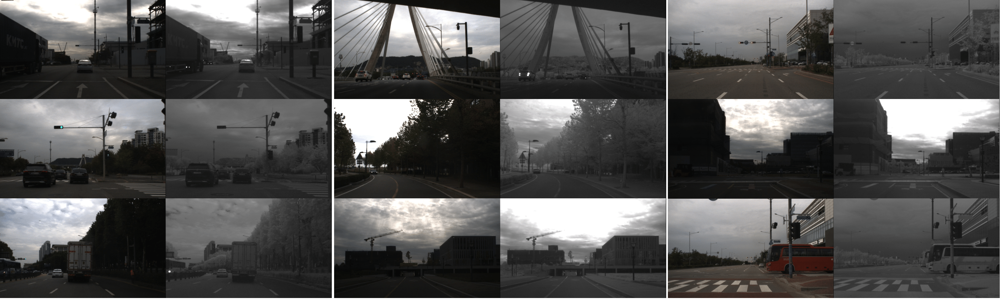
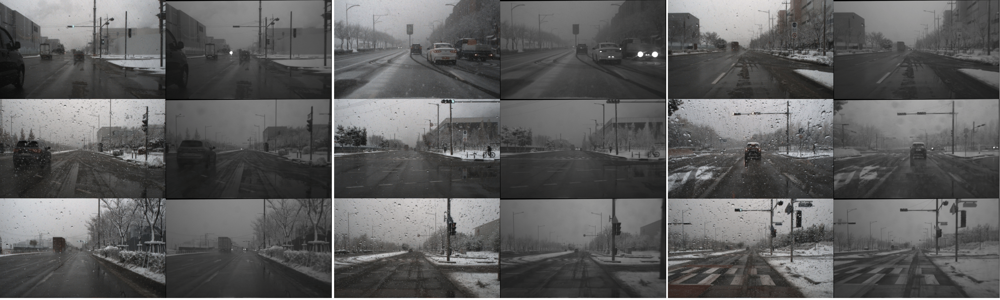
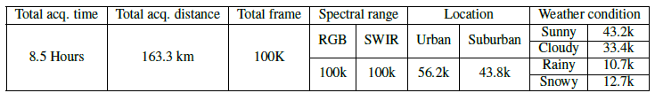

Details of the RASMD
The dataset collected under different weather situations and each RGB-SWIR pairs are spatially registered.
Weather situation: Cloudy

Weather situation: Rainy

Weather situation: Sunny

Weather situation: Snowy

Data acquisition details and data distributions
